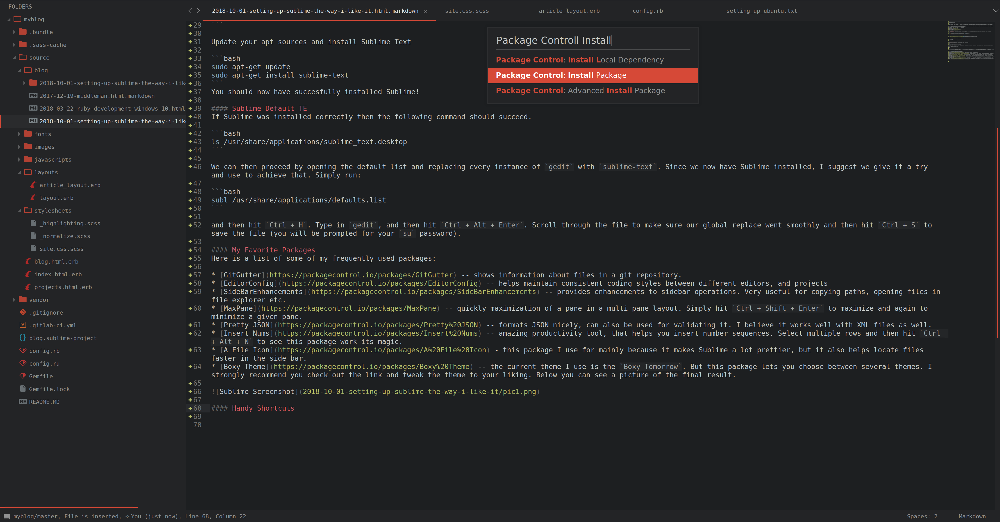

In this blog post I will go over how I set up Sublime Text 3 for development this includes: installation instructions, making Sublime the default text editor, some handy Sublime packages, and a shortcuts list.
Sublime has been the text editor I have been using for at least 2 years now, and it has always got the job done. While I am very happy with it, I will soon give a shot to VSCode. Why? Its good to change things up, and I hear a lot of good things about VSCode. Also I am getting tired of clicking cancel on the Sublime purchase pop-ups, and $80 is a steep price to pay for a poor college student.
Use these links to skip to the section you are interested in:
Installation First
Note that the following installation is for Debian based system. First we add the GPG and add the apt repository. Open up your Terminal (Ctrl + Alt + T) and type:
wget -qO - https://download.sublimetext.com/sublimehq-pub.gpg | sudo apt-key add -
Add the stable apt repository:
echo "deb https://download.sublimetext.com/ apt/stable/" | sudo tee /etc/apt/sources.list.d/sublime-text.list
Update your apt sources and install Sublime Text
sudo apt-get update
sudo apt-get install sublime-text
You should now have successfully installed Sublime!
Sublime Default TE
If Sublime was installed correctly then the following command should succeed.
ls /usr/share/applications/sublime_text.desktop
We can then proceed by opening the default applications list and replacing every instance of gedit with sublime-text. Since we now have Sublime installed, I suggest we give it a quick spin:
subl /usr/share/applications/defaults.list
and then hit Ctrl + H. Type in gedit, and then hit Ctrl + Alt + Enter. Scroll through the file to make sure our global replace went smoothly and then hit Ctrl + S to save the file (you will be prompted for your su password).
My Favorite Packages
Here is a list of some of my frequently used packages:
- GitGutter – shows information about files in a git repository.
- EditorConfig – helps maintain consistent coding styles between different editors, and projects
- SideBarEnhancements – provides enhancements to sidebar operations. Very useful for copying paths, opening files in file explorer etc.
- MaxPane – quickly maximization of a pane in a multi pane layout. Simply hit
Ctrl + Shift + Enterto maximize and again to minimize a given pane. - Pretty JSON – formats JSON nicely, can also be used for validating it. I believe it works well with XML files as well.
- Insert Nums – amazing productivity tool, that helps you insert number sequences. Select multiple rows and then hit
Ctrl + Alt + Nto see this package work its magic. - A File Icon - this package I use for mainly because it makes Sublime a lot prettier, but it also helps locate files faster in the side bar.
- Boxy Theme – the current theme I use is the
Boxy Tomorrow. But this package lets you choose between several themes. I strongly recommend you check out the link and tweak the theme to your liking.
Below you can see a picture of the final result. 
Shortcuts Cheatsheet
Ctrl + D– Make a selection and then press combo to grab next occurrence of the given selection.Ctrl + K– Ignores the current selection after Ctrl + D (this lets you skip certain occurrences).Ctrl + H– Replace Things.Ctrl + K + B– Hide sidebar hotkey, awesome when all you want to see is code!.Ctrl + K + U– Convert Selection to upper case.Ctrl + K + L– Convert Selection to lower case.Ctrl + Shift + F– Replace or Find Across multiple files.Alt + Shift– Extend Cursor.Alt + <Number>– Select a tab, where number corresponds to the tab you want to open.Shift + Alt + <Number>– Split sublime intoof work panes. Shift + Alt + Enter– Maximize focus work pane (shortcut from MaxPane package).Ctrl + <Number>– Select a working pane.